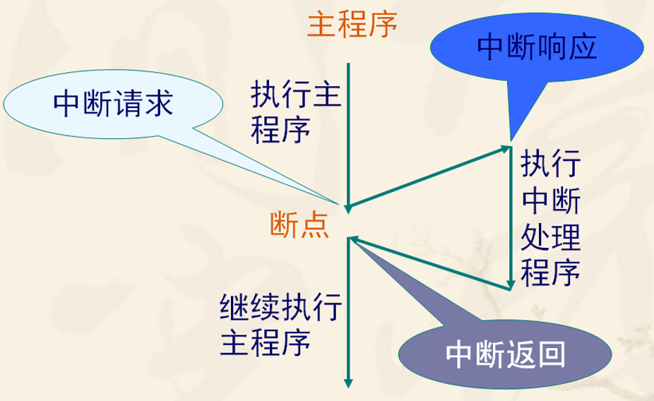
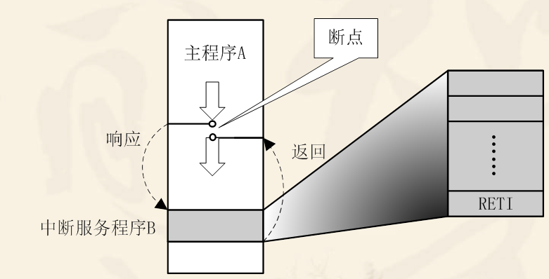
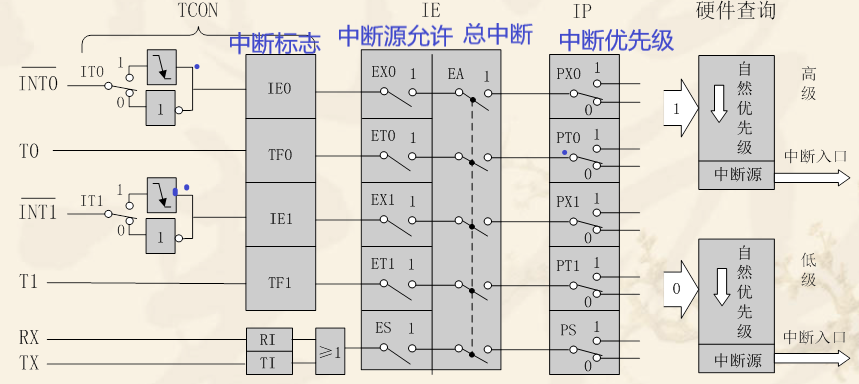
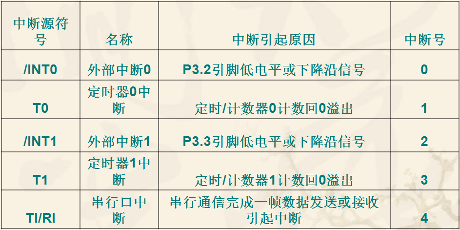
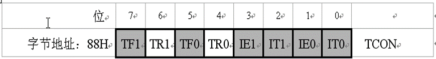
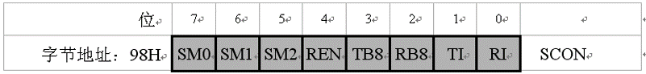
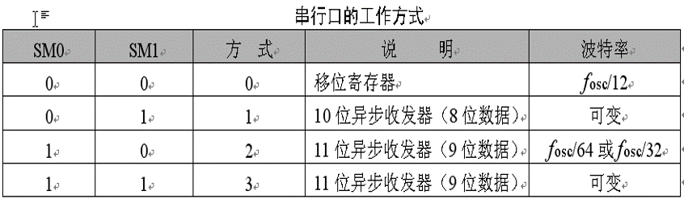
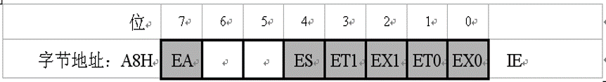

C51中断系统
一，中断的概念：
中断是指CPU在处理某一事件A时，发生了另一事件B请求CPU立刻去处理（中断发生）；CPU暂时停止当前的工作（中断响应），转而去处理事件B（中断服务），待CPU处理事件B完成后，再回到原来事件A被中断的地方继续处理事件A（中断返回）。
中断过程：

引起CPU中断的根源，称为中断源。中断源向CPU提出的中断请求。CPU暂时中断原来的事务A，转去处理事件B。对事件B处理完毕后，再回到原来被中断的地方（即断点），称为中断返回。实现上述中断功能的部件称为中断系统。

二，中断能解决的问题
分时操作：CPU可以分时为多个I/O设备服务，提高了计算机的利用率；
实时响应：CPU能够及时处理应用系统的随机事件，系统的实时性大大增强；
可靠性高：CPU具有处理设备故障及掉电等突发性事件能力，从而使系统可靠性提高。
三，中断系统结构
89C51/52的中断系统有5个中断源 ，2个优先级，可实现二级中断嵌套 。 
中断标志：
1、（P3.2）可由IT0(TCON.0)选择其为低电平有效还是下降沿有效。当CPU检测到P3.2引脚上出现有效的中断信号时，中断标志IE0(TCON.1)置1，向CPU申请中断。
2、(P3.3）可由IT1(TCON.2)选择其为低电平有效还是下降沿有效。当CPU检测到P3.3引脚上出现有效的中断信号时，中断标志IE1(TCON.3)置1,向CPU申请中断。
3、TF0（TCON.5），片内定时/计数器T0溢出中断请求标志。当定时/计数器T0发生溢出时，置位TF0，并向CPU申请中断。
4、TF1（TCON.7），片内定时/计数器T1溢出中断请求标志。当定时/计数器T1发生溢出时，置位TF1，并向CPU申请中断。
5、RI（SCON.0）或TI（SCON.1），串行口中断请求标志。当串行口接收完一帧串行数据时置位RI或当串行口发送完一帧串行数据时置位TI，向CPU申请中断。
中断优先级：
在该寄存器中，优先级分为1 0两级，对应的位置为1则为高优先级，位置为0则为低优先级。执行时先将高优 先级的中断执行完后才会执行低优先级（同样高优先级情况下，按默认优先级排）。
- PS：串行口中断优先级控制位
- PT1：定时器1优先级控制位
- PX1：外部中断1优先级控制位
- PT0：定时器0优先级控制位
- PX0：外部中断0优先级控制位
四，中断源
89c51有5个中断源：
INT0 ：外部中断0请求，低电平有效。
T0 : 定时/计数器0溢出中断请求。
INT1 : 外部中断1请求，低电平有效。
T1 ：定时/计数器1溢出中断请求。
RI/TI : 串口中断请求，当串口发送/接受完一帧数据时，便请求中断。
其中 INT0/1是两个外部中断，T0/1，TXD/RXD是3个内部中断，优先级由上到下依次递减。

五，中断控制寄存器
89c51有以下4个特殊功能寄存器
定时器控制寄存器TCON（用6位）；
串行口控制寄存器SCON（用2位）；
中断允许寄存器IE;
中断优先级寄存器IP.
1.TCON中的中断标志位

IT0（TCON.0），外部中断0触发方式控制位。
当IT0=0时，为电平触发方式。
当IT0=1时，为边沿触发方式（下降沿有效）。
IE0（TCON.1），外部中断0中断请求标志位。
IT1（TCON.2），外部中断1触发方式控制位。
IE1（TCON.3），外部中断1中断请求标志位。
TF0（TCON.5），定时/计数器T0溢出中断请求标志位。
TF1（TCON.7），定时/计数器T1溢出中断请求标志位。
2.串行口控制寄存器SCON；
SCON 是一个特殊功能寄存器，用以设定串行口的工作方式、接收/发送控制以及设置状态标志：

SM0和SM1为工作方式选择位，可选择四种工作方式：

SM2，多机通信控制位，主要用于方式2和方式3。当接收机的SM2=1时可以利用收到的RB8来控制是否激活RI（RB8＝0时不激活RI，收到的信息丢弃；RB8＝1时收到的数据进入SBUF，并激活RI，进而在中断服务中将数据从SBUF读走）。当SM2=0时，不论收到的RB8为0和1，均可以使收到的数据进入SBUF，并激活RI（即此时RB8不具有控制RI激活的功能）。通过控制SM2，可以实现多机通信。
在方式0时，SM2必须是0。在方式1时，如果SM2=1，则只有接收到有效停止位时，RI才置1。
**REN**，允许串行接收位。由软件置REN=1，则启动串行口接收数据；若软件置REN=0，则禁止接收。 TB8，在方式2或方式3中，是发送数据的第九位，可以用软件规定其作用。可以用作数据的奇偶校验位，或在多机通信中，作为地址帧/数据帧的标志位。
在方式0和方式1中，该位未用。
**RB8**，在方式2或方式3中，是接收到数据的第九位，作为奇偶校验位或地址帧/数据帧的标志位。在方式1时，若SM2=0，则RB8是接收到的停止位。3.中断允许控制IE

EX0(IE.0)，外部中断0允许位； ET0(IE.1)，定时/计数器T0中断允许位；
EX1(IE.2)，外部中断0允许位；
ET1(IE.3)，定时/计数器T1中断允许位；
ES（IE.4)，串行口中断允许位；
EA (IE.7)， CPU中断允许（总允许）位。
4.中断优先级控制寄存器IP
| 位序 | D7 | D6 | D5 | D4 | D3 | D2 | D1 | D0 |
|---|---|---|---|---|---|---|---|---|
| 位名字 | - | - | - | PS | PT1 | PX1 | PT0 | PX0 |
| 位地址 | - | - | - | BCH | BBH | BAH | B9H | B8H |
| 串行口 | T1 | INT1 | T0 | INT0 |
在该寄存器中，优先级分为1 0两级，对应的位置为1则为高优先级，位置为0则为低优先级。执行时先将高优先级的中断执行完后才会执行低优先级（同样高优先级情况下，按默认优先级排）。
PS：串行口中断优先级控制位
PT1：定时器1优先级控制位
PX1：外部中断1优先级控制位
PT0：定时器0优先级控制位
PX0：外部中断0优先级控制位
51单片机的中断优先级有三条原则 :
一，CPU同时接收到几个中断时，首先响应优先级别最高的中断请求。
二，正在进行的中断过程不能被新的同级或低优先级的中断请求所中断。
三，正在进行的低优先级中断服务，能被高优先级中断请求所中断。
为了实现上述后两条原则，中断系统内部设有两个用户不能寻址的优先级状态触发器。其中一个置1，表示正在响应高优先级的中断，它将阻断后来所有的中断请求；另一个置1，表示正在响应低优先级中断，它将阻断后来所有的低优先级中断请求。
C51外部中断
中断响应条件
中断源有中断请求；
此中断源的中断允许位为1；
CPU开中断（即EA=1）。
以上三条同时满足时，CPU才有可能响应中断。
1.外部中断初始化
1 | 外部中断0 |
2 | void Int0Init() |
3 | { |
4 | //设置INT0 |
5 | IT0=1;//跳变沿出发方式（下降沿） |
6 | EX0=1;//打开INT0的中断允许。 |
7 | EA=1;//打开总中断 |
8 | } |
9 | 外部中断1 |
10 | void Int1Init() |
11 | { |
12 | //设置INT1 |
13 | IT1=1;//跳变沿出发方式（下降沿） |
14 | EX1=1;//打开INT1的中断允许。 |
15 | EA=1;//打开总中断 |
16 | } |
2.外部中断函数
中断标志
1、（P3.2）可由IT0(TCON.0)选择其为低电平有效还是下降沿有效。当CPU检测到P3.2引脚上出现有效的中断信号时，中断标志IE0(TCON.1)置1，向CPU申请中断。
2、(P3.3）可由IT1(TCON.2)选择其为低电平有效还是下降沿有效。当CPU检测到P3.3引脚上出现有效的中断信号时，中断标志IE1(TCON.3)置1,向CPU申请中断。
1 | //外部中断1 中断号位0 |
2 | void Int0() interrupt 0 //外部中断0的中断函数 |
3 | { |
4 | delay(1000); //延时消抖 |
5 | if(k3==0)//k3定义的引脚为sbit k4=P3^2; 定义按键K3 |
6 | { |
7 | led=~led; |
8 | } |
9 | } |
10 | //外部中断1 中断号位2 |
11 | void Int1() interrupt 2 //外部中断1的中断函数 |
12 | { |
13 | delay(1000); //延时消抖 |
14 | if(k4==0)//k4定义的引脚为sbit k4=P3^3; 定义按键K4 |
15 | { |
16 | led=~led; |
17 | } |
18 | } |
实例:
1 | /************************************************************************************** |
2 | * 外部中断0实验 * |
3 | 实现现象：下载程序后，按照光盘内操作视频接线，操作K3按键使LED1（D11）状态取反 |
4 | 注意事项：无。 |
5 | ***************************************************************************************/ |
6 | |
7 | |
8 | |
9 | typedef unsigned int u16; //对数据类型进行声明定义 |
10 | typedef unsigned char u8; |
11 | |
12 | sbit k3=P3^2; //定义按键K3 |
13 | sbit led=P2^0; //定义P20口是led |
14 | |
15 | /******************************************************************************* |
16 | * 函 数 名 : delay |
17 | * 函数功能 : 延时函数，i=1时，大约延时10us |
18 | *******************************************************************************/ |
19 | void delay(u16 i) |
20 | { |
21 | while(i--); |
22 | } |
23 | |
24 | /******************************************************************************* |
25 | * 函 数 名 : Int1Init() |
26 | * 函数功能 : 设置外部中断1 |
27 | * 输 入 : 无 |
28 | * 输 出 : 无 |
29 | *******************************************************************************/ |
30 | void Int0Init() |
31 | { |
32 | //设置INT0 |
33 | IT0=1;//跳变沿出发方式（下降沿） |
34 | EX0=1;//打开INT0的中断允许。 |
35 | EA=1;//打开总中断 |
36 | } |
37 | |
38 | /******************************************************************************* |
39 | * 函 数 名 : main |
40 | * 函数功能 : 主函数 |
41 | * 输 入 : 无 |
42 | * 输 出 : 无 |
43 | *******************************************************************************/ |
44 | void main() |
45 | { |
46 | Int0Init(); // 设置外部中断0 |
47 | while(1); |
48 | } |
49 | |
50 | /******************************************************************************* |
51 | * 函 数 名 : Int0() interrupt 0 |
52 | * 函数功能 : 外部中断0的中断函数 |
53 | * 输 入 : 无 |
54 | * 输 出 : 无 |
55 | *******************************************************************************/ |
56 | |
57 | void Int0() interrupt 0 //外部中断0的中断函数 |
58 | { |
59 | delay(1000); //延时消抖 |
60 | if(k3==0) |
61 | { |
62 | led=~led; |
63 | } |
64 | } |